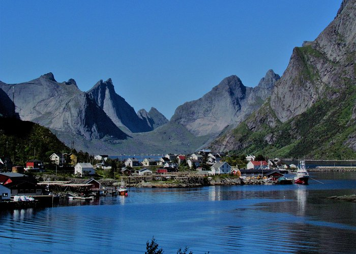
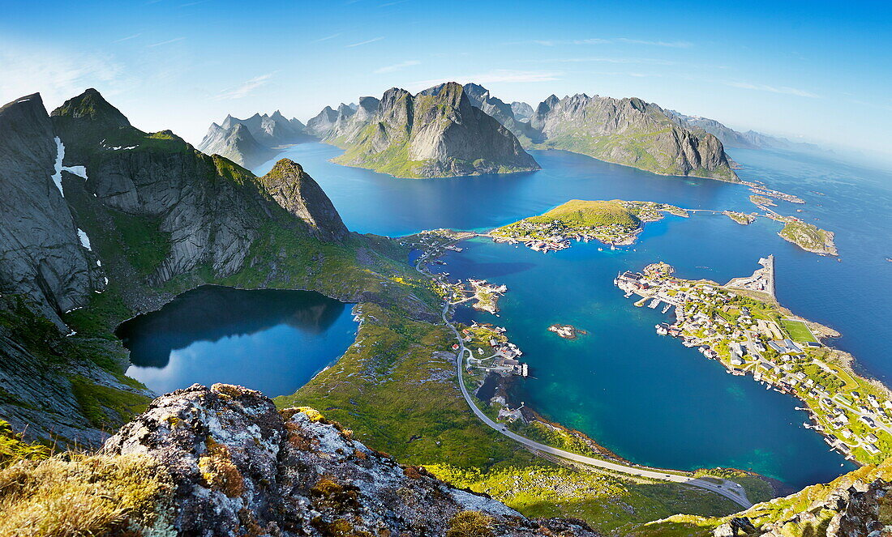
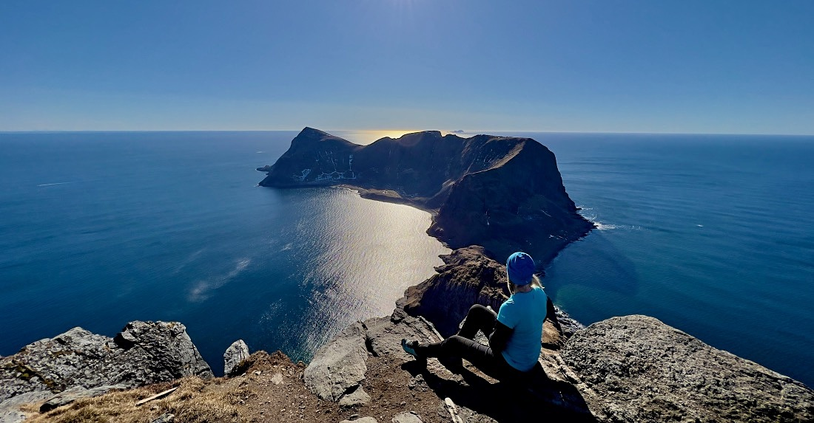

Vagan
Vågan, with many shops, galleries and the Lofoten Kulturhus. The goat-like Svolværgeita looks down on the town, a challenge to climbers. Most of Lofoten’s accommodation is here, and it is one of the most important harbours in North Norway for maritime services.
Moskenes
In Moskenes you will find Lofoten’s most dramatic landscape. Here the mountains plunge straight into the sea, small bridges connect the small islands. There is a distinctive feeling of closeness between you, the mountains, and the sea.
Vaeroy
Værøy has everything typical of Lofoten. Midnight sun, white sandy beaches, a rich bird life and a rich fishing history, all while still beeing a living fishing village.